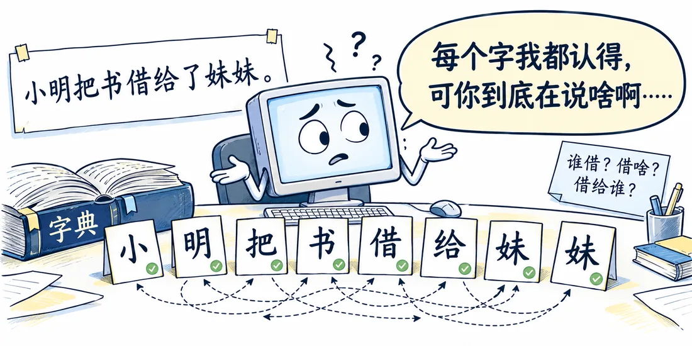
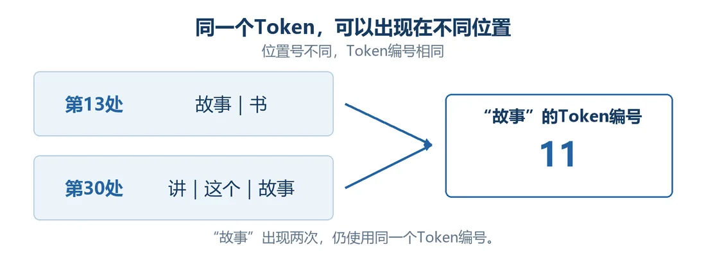
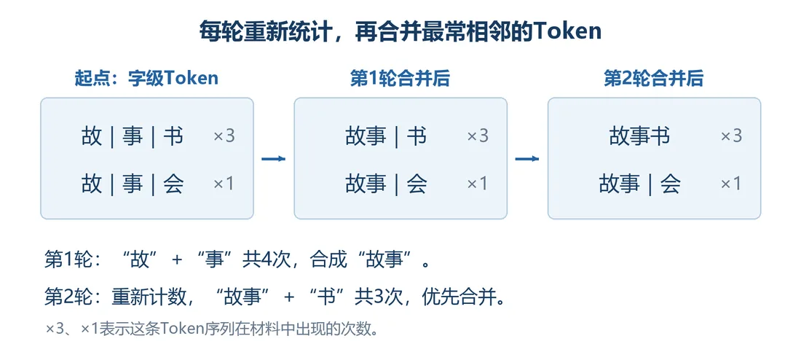

我们在这儿
前言里我们定了两个出发点。这一篇先争取把第一个实现了：看能不能把一个中文长句，解剖成一个一个的小单元。
我们一直要用的长句是这句：
昨天，小明把妈妈买的那本蓝色封面的故事书借给了住在上海的妹妹，因为她下周要给孩子讲这个故事。
这一篇要解决把长句拆成 31 个 Token，并给词表里的 Token 编号。
大概阅读约 8–10 分钟
假设把新华字典输给电脑，它就认得每个字。可这不代表它读得懂上面这个长句。
比如问“谁把什么借给了谁”，它得知道：
再问“借的是哪本书”，又得把“妈妈买的”“蓝色封面的”都归到“故事书”上。
还有那个“她”，单看这个字，谁知道指谁。
到现在为止，字跟字之间的关系，电脑一点都不知道。可字和字的关系，恰恰是理解一句话的关键。我们就要从这个长句开始，一步步摸索怎么算这些关系，最后凑出一套完整的算法——这套算法，就是 Transformer。

对汉语来说，最自然的拆法是拆成一个一个的汉字，可像“小明”“故事”这样的词，还得再组合起来。
句子该切成多少个单元，没有标准答案。单元可以是一个字、一个词、词的一部分或者标点，哪怕它没有独立完整的意思。这些单元我们给它起个时髦的英文名字，叫 Token。不叫 word，是因为很多时候它并不是一个字或一个词。
提醒一句：AI 技术没有标准答案，只要能用、用起来结果不错，就是好办法。这种实用主义会一直贯穿这个教程。
这里我们把长句切成 31 个 Token，只是约定的切法，后文一直沿用。
“故事”这样的 Token 在句子里重复出现。我们去重后，把不重复的 Token 列成一张表，叫词表，再给表里每个 Token 编个号，这个号码叫 Token 编号。
位置号通常按习惯从 1 开始；Token 编号为了方便电脑取数，通常从 0 开始。这只是编号约定，没有特别的数学含义。
我们从句头走到尾，第一次遇到某个 Token 就给个新号，再遇到就沿用旧号。于是“昨天”是 0，“故事”是 11，“书”是 12。两处“故事”分别在第 13 处和第 30 处，却共用编号 11。本句有 31 个位置，词表收录了 27 个不同的 Token。
动手点完，再看静态图：两个位置虽然不同，箭头都指向同一个编号。

这个教程只研究一句话，所以我们手工切。要是成千上万句话，就得让电脑按规则切 Token、查编号，这个程序叫分词器（Tokenizer）。
先试个笨办法：一个字算一个 Token，再数哪些 Token 总挨着出现，哪一对出现得最多，就先把它们合起来。
假设一份材料里，“故事书”出现 3 次，“故事会”出现 1 次，让电脑分析两轮。
电脑就这么不厌其烦地“统计、合并、再统计”，我们先约好合并多少轮，到了就停。它只管哪对更常挨着，不判断合出来的是不是一个词。这套反复合并相邻 Token 的办法，叫 BPE（Byte Pair Encoding）。

图先把两轮合并摆出来。下面这个小演示，可以自己点“下一轮”跟着走。
这一篇收个尾
这一篇拿到：31 个 Token、27 个词表项和对应编号。
下一篇接着看：给每个 Token 配一组能计算的数。